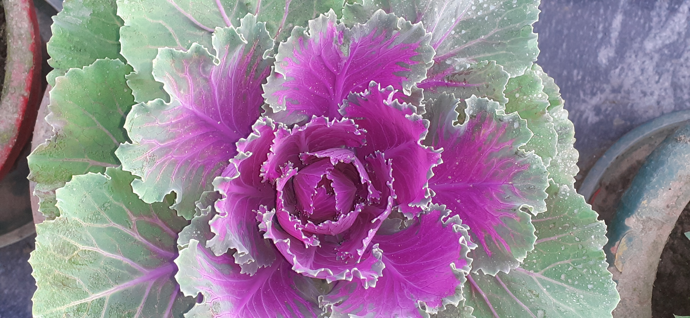

|

|
PURPLE KALE !!!!!!!
This is a picture of red cabbage(purple kale).THIS PICTURE IS CLICKED BY MR.AARYAN SINGH SACHAN.
Red cabbage has quite a few beneficial effects as it is rich in a number of nutrients and vitamins.
Red cabbage has 'anti-cancer' properties due to the presence of glucosinolates and anti-oxidants.
Nutritional facts Per 100 Grams
31
Calories
0.2 g
Total Fat
27 mg
Sodium
243 mg
Potassium
7 g
Total Carbohydrate
1.4 g
Protein
Vitamins and Minerals
22 %
Vitamin A
0.04
Calcium
95 %
Vitamin C
4 %
Iron
10 %
Vitamin B-6
4 %
Magnesium
#Health Benefits of Red Ccbbage
1)Red Cabbage good if your facing health problems like gout and acid reflux.
Add Red Cabbage in your weight management diet and diabetes patients also consume this vegetable, good for them.
Read out side effects and precaution while consuming red cabbage and cultivation details also.
2)Red Cabbage Strengthens immune system
3)Red cabbage is rich in Vitamin C which is a very powerful anti-oxidant
|